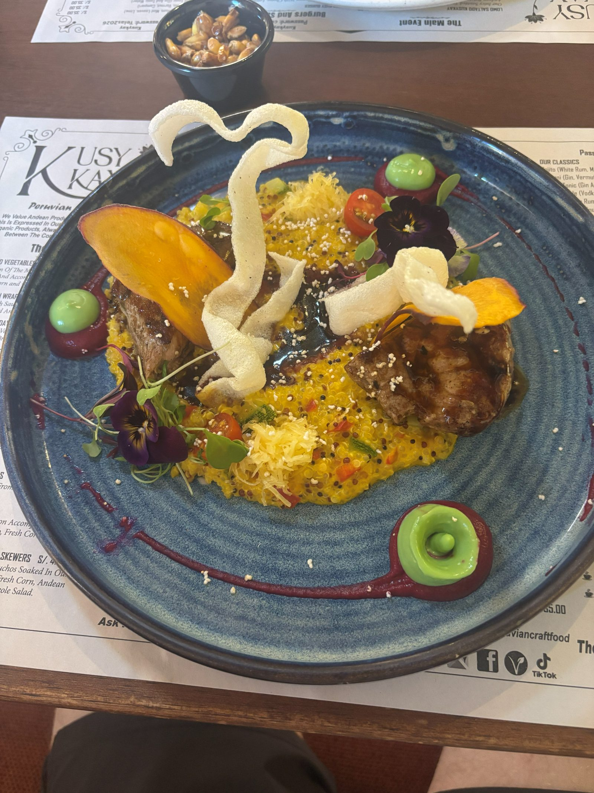
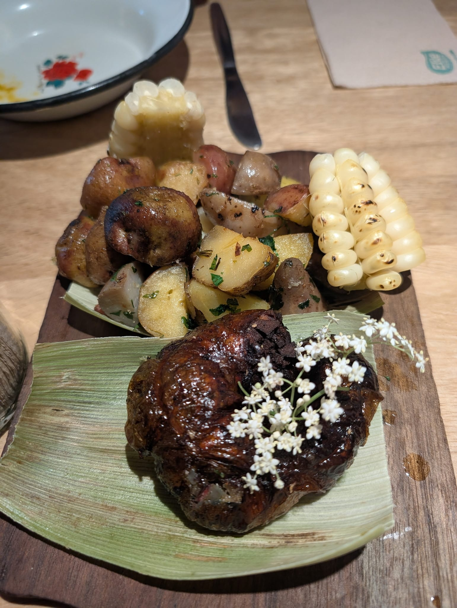
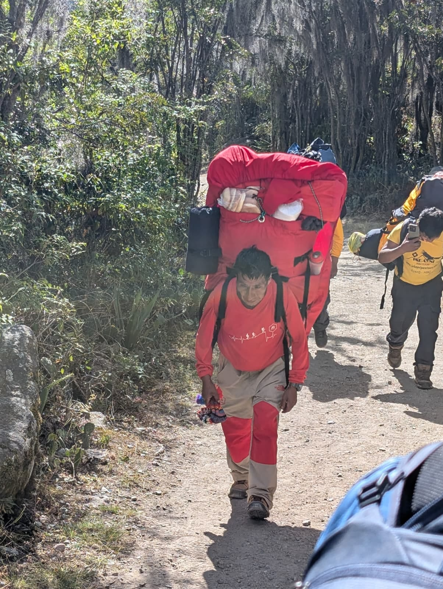
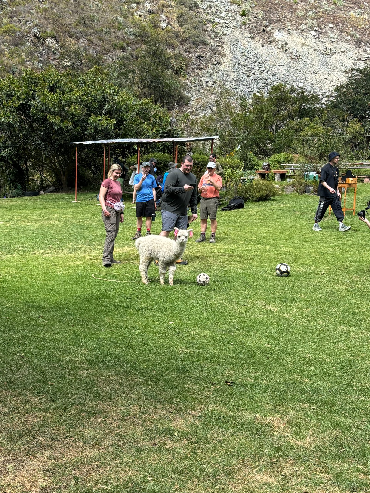
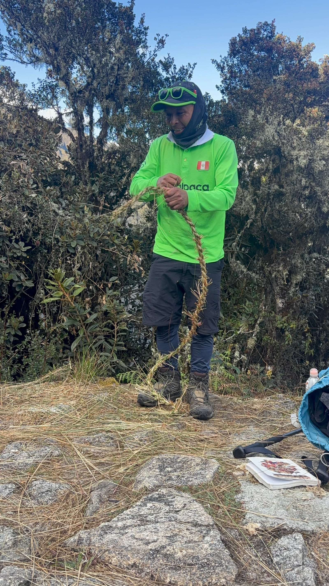

MACHU PICCHU 2026
Day 1 - Travel 5/12
- Flight out of Ohare was delayed about an hour but only got to Miami 20-30 min late
- Slept about 3.5 hrs on the red-eye to Lima
- Slept another 20 min or so on the flight to Cusco
Day 2 - Cusco 5/13
- Did some tasks
- Sorted out the international cell plan with Verizon for about 30 minutes
- Dropped our bags off at luggage storage
- Bought some waters
- Got some cash
- Ate breakfast at
- I had the worst "wet omelette skillet"
- Funky mushrooms, greens tasted odd, egg was horribly cooked and not seasoned
- Met up with our tour driver and guide at 10:30 at the Municipal Palace Building
-
1 / 3
- Got to KusyKay a little before 3:00

- Went back to get bags, water, and a snack before meeting with our driver at 4:00 to take us to Ollantaytambo
- Drive was quicker than expected but insanely bumpy, they just have sections of road where it's like moguls and unpaved
- Got 10 min away from Ollantaytambo before hitting a ton of traffic, probably an accident/emergency in town
- We were on the only road into town so we just sat there and didn't move for 20 minutes
- Got to the hotel finally and got ready for bed
Day 3 - Ollantaytambo 5/14
- Got up at 6:00 and got things organized before heading out to grab empanadas and hike up the first ruins
-
1 / 3
- Got lunch at Chuncho

- Went up the Granaries (other ruins) for more acclimation work
-
1 / 2
- Did some tasks like getting cash, food for the morning, water
- Hung around the hotel for a bit and went back up one of the ruins for some more work to get acclimated and felt way better than in the morning
- Got dinner at Amanto - Comida Sagrada
- Took our briefing call from the guide on the phone at 7
- Everyone else was in Cusco and did it in person
- Went to be around 8 prepared to wake up at 5:30
Day 4 - Inca Trail 5/15 (8.7 miles)
- Got picked up from the hotel at around 6:45 and got taken by car to the bus that couldn't get into town
- Rode the bus to KM 82 where we had breakfast, got passports checked, and started the hike
- The first part (most of day 1 and maybe part of 2) was part of the commercial trail
- People had stand everywhere selling snacks, drinks, charging 1 PEN for the bathroom, etc
- The craziest part was that they sold shooters and beer along the trail, all warm

- Stopped at a very pretty rest area with games and an alpaca walking around

- Saw some Incan ruins and rested for a bit before going up to lunch
- Lunch was amazing and surprised us with the amount of food they gave us
- Headed on towards the campsite where they had our tents set up for us and bags waiting
-
1 / 2
- Ate dinner and went to bed at 7:30
Day 5 - Inca Trail 5/16 (10 miles)
- Woke up at 4:30 to bedside coca tea
- Packed our bags and ate breakfast
- On the trail by 6 and we had the longest, highest, hardest part of the trip coming up
- Me, dad, Jackson, Grace, and Aussie Nick were ahead of most of the group and killed it up this hill all the way to the Dead Woman's Pass
- Stopped on the way at a campsite where local women were selling Gatorades, snacks, more alcohol, etc
-
1 / 5
- Stopped at the pass for a while and took some pictures
- Flew down the mountain from there to lunch very fast
- Lunch was good again
- Got back on the trail and headed up to the second pass (Runkuraqay)
- Realized we lost Paul for a while and then decided he was prolly ahead of us
- Turns out, once we got to the campsite, he thought he was in the back so just kept going
- Flew down the hill to another ruin site and explored a bit
- Went down into the valley a little then back up to the campsite
- We had happy hour again with tea and then dinner before
Day 6 - Inca Trail 5/17 (6.2 miles)
- Got up with coca tea again at 5:15
- Packed up and ate breakfast
- Porters introduced themselves
- Porters and guide did a traditional dance and whipped each other's ankles
- Pretty fun to see them goofing around for once
- Got started hiking at maybe 7:00 up some steep uphill
- JC showed us how to make a rope out of the native grasses
- The community makes 70 something meters of rope per person for a bridge

- Did some boring up and down hiking for a while, mostly down and steep
- Got to the rest campsite and went up to a lookout from there and saw some great views
- Hiked downhill for a while to Inti Pata
- Went down to the campsite from there for lunch
- Showered with natural spring water routed towards the campsite and showers
- Felt great to rinse the layers of dirt, sunscreen, sweat, and bug spray off of me
- We had 2 hours of siesta until hiking to "mini Machu Picchu" or Wiñay Huayna
- Cool place with amazing views and original, preserved Incan architecture
-
1 / 3
- Happy hour/tea time when we returned and then dinner shortly after
- The chef made a cake for us without an oven, he made it in a pot and decorated it for us
- Thanked and tipped the chefs and porters before going over the itinerary for the Machu Picchu day
- Went to bed and slept around 8:00
Day 7 - Machu Picchu/Cusco 5/18 (3.1 miles)
- Woke up at 3:00, got dressed, drank some tea, and headed to the waiting area
- With only a group of 3 in front of us, we were the second group in line to get in at 5:30
- Dad and I started at the back of our group and quickly found the "Furious Five"
- We were "Fantastic Five" but rebranded on day 2
- Made it to Sun Gate at 6:15 and had a great first view of Machu Picchu
- Once others made it, clouds had covered the view but they quickly went away and it was clear the rest of the day
- Hiked down with the group to Machu Picchu and JC ("sexy guinea pig", or "cuytootoo" (top male guinea pig), or "brown sugar") gave us a great walking tour of Machu Picchu
- We saw the Temple of the Condor, lots of terraces, houses, and some more llamas
-
1 / 6
- Got on the bus down to Aguas Calientes
- Cool ride, just narrow switchbacks with other busses coming up the other way the whole way down
- Ate lunch at Tupana Wasi
- Very good Peruvian food
- Looked like Alpaca Expeditions reserved the whole place for us
- Walked around the area getting waters, snacks, and Dad got whipped by a little kid out of nowhere next to the Pachakuteq statue
- The three kids all took turns shipping a few different people around the main square, they had a lot of fun
- Met up with the team to get train tickets and say one last goodbye
- The train station was so busy and chaotic but the organized part was that we all had assigned seats so it didn't matter when we got on or anything
- Transferred to a van for the 2 hour trip back to Cusco
- We had to take a weird shortcut through the woods and across the tracks to get to the road where the van came by and picked us up
- We stopped at the office to get luggage but they didn't say that and would have just driven away without us getting our bags if I didn't check that our luggage airtags said they were there
- Got dropped off last and checked in to Ureta Hotel
- Walked down the street for empanadas but the place on Google didn't exist so we shared a pizza and grabbed water next door
- Went to bed around 10
Day 8 - Cusco/travel
- Got up at 5:30 and ordered an Uber at about 6:00
- Had to get a new driver and didn't get picked up until 6:20ish despite the driver being only 3-4 min away the whole time
- Got through security and tried to get on the earlier flight but they said no so we waited for ours
- Boarded early but just sat there until taking off only a few minutes late
- Made it home eventually